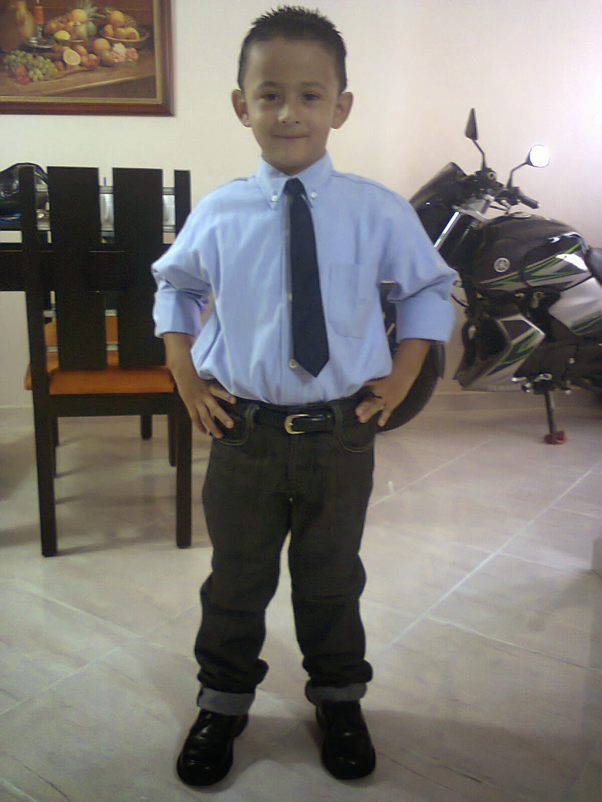

I was born in Bello, Antioquia, Colombia. At the beginning of my life, I lived with my mom, my grandma, and my grandpa. It was a warm and loving home, and those early years shaped who I am today.
When I was around 3 years old, my life changed suddenly. My grandpa suffered a heart attack and passed away. Even though I was very young, that moment marked my family deeply and taught me, early on, how fragile life can be. When I was 5 years old, my mom got married to the man I now consider my father. He became an important figure in my life, supporting me and helping raise me as his own.
At 6 years old, I started primary school at La Salle de Bello. I studied there from 1st to 5th grade. Those years were full of learning, friendships, and the first challenges of school life. After finishing primary school, I changed schools several times. My educational path was not traditional, but it taught me how to adapt. Eventually, I completed my studies in a virtual school, where I officially graduated in July 2025. When I was 11 years old, the pandemic began. Imagine being a teenager, alone at home most of the time—it was chaotic, confusing, and intense. But that period changed my life in an unexpected way. During that time, I got a new laptop, and I started learning new things on my own. That’s when I discovered coding. Coding combined the three things I love the most: technology, English, and math. I knew I had found something special.
I began learning programming, but many times I felt lost. In 2024, I started a technical program in software development at Uniminuto. Unfortunately, due to problems with the college, I couldn’t finish the program. Even so, the experience helped me confirm that technology was my path. In January 2025, I started working as a bilingual call center agent. That job helped me improve my English, discipline, and communication skills, while also teaching me responsibility at a young age.